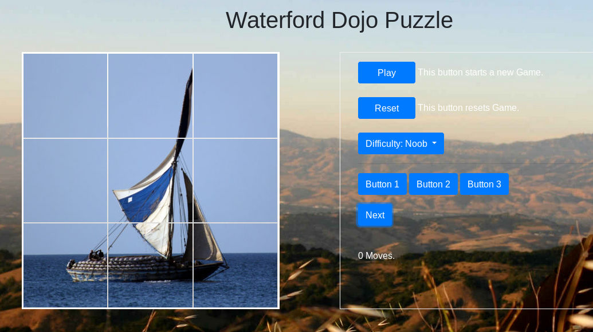

Looks at the index.html file and the script.js file to find out how to store the image urls in an array and create a next button that changes the image to the nex image in the array.
Then add a next on the puzzle page that changes the puzzle image to a following image
The result should look like the following
